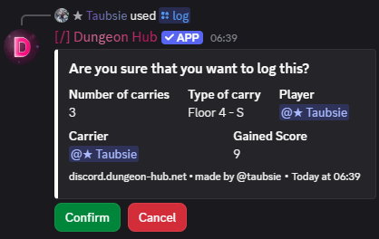

/log
Description
Use this within a carry ticket channel. The bot validates the ticket, prompts for confirmation, and records the log, giving you score.
Arguments
Name | Type | Description | Optional? | Additional |
|---|---|---|---|---|
| Integer | Number of carries to log. | ❌ No | Min: 1, Max: 200 |
| Autocompleted String | Difficulty identifier of the carry. | ❌ No |
Examples
Log a carry
/log amount: 3 carry-difficulty: S

See Also
/score ✏️: your score increases from successful logs.
/leaderboard: see how logs affect rankings.
/manage-score: admins can resolve edge cases manually.
Carry Difficulty ✏️: the Carry Difficulty you enter.
27 December 2025